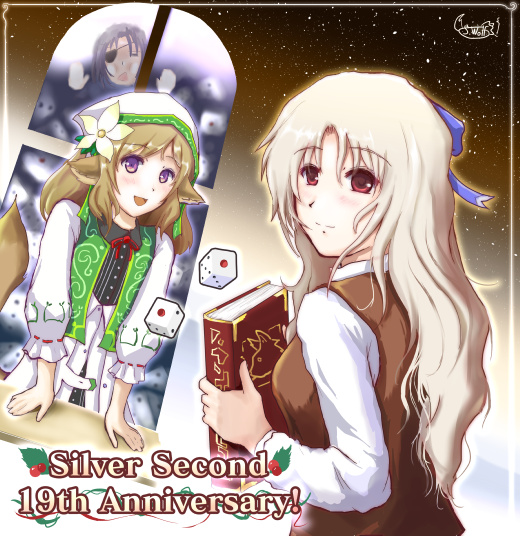
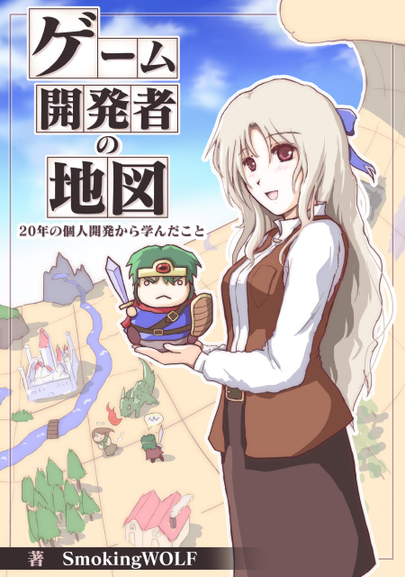

■2017-12-24 (日) 祝！ シルバーセカンド19周年！▼
ということで本サイト、シルバーセカンドは
2017年12月24日をもってとうとう19周年を迎えました！
『片道勇者TRPGアペンド』よりTRPG版ネムリ（左）とアルバート（左上）、
『ゲーム開発者の地図』よりマスコットキャラのラッシー（右）

ということで今回も今年1年の戦歴を振り返っていきたいと思います！
【2017年にやったこと】
【1月～3月】
◆ウディタの修正作業＆Ver2.20をリリース！
→ 3年半ぶりの更新です、お待たせしました。今回の更新によって、
1280x960などの大きな解像度や、16：9サイズにも対応！
タイルサイズと画面サイズを個別に設定できたりして色々便利に。
◆『片道勇者TRPGアペンド』まわりの監修作業、3/18に無事発売！
→ アペンドはチャレンジ世界やNPC世界など、単発プレイを面白くする一冊！
2冊目の『片道勇者TRPGプラス』がなくても1冊目だけあれば遊べるので、
TRPG無印とこれを合わせるのもおすすめです。
◆『片道勇者TRPGプラス』のリプレイも同時公開！
→ この前の『片道勇者TRPGリプレイ 灰の少女とヨルムンガンド』もよろしくお願いします！
『＜自家製＞片道勇者TRPG』からおおよそ引き続きのメンツで、
相変わらず面白い冒険が繰り広げられています。
【4月～5月】
◆『片道勇者』がGクラスタへリリース(サービス終了したので当時のｱｰｶｲﾌﾞへ)
→ Gクラスタはクラウドゲームのサービスです。
ほとんど遅延なく遊べるのでびっくりしました。
◆エイプリルフールに『片道勇者新作』の開発を発表。
プロトタイプ開発を開始しました。
→ ダメそうならすぐボツになる予定でした。
◆『片道勇者TRPG』のまとめ記事を作成！
→ 『片道勇者TRPG』がアペンドまでリリースされて一段落したので！
もしかしたらまだまだ展開が続く……かも！？
【6月】
◆片道勇者次回作のタイトルが『片道勇者2』にほぼ決定！（記事になったのは8月）
→ 2以外だと最新作が分からなくなるから、という単純な理由で2に決まりました。
◆『片道勇者2』の画面ラフを公開

→ 今ではこの画面ラフより進んでいます。
【7～8月】
◆第9回ウディコン、開催！

→ 今年のウディコンも楽しかったですね！
来年はいよいよ第10回、本格的に珠玉の作品が集まりそうです。
【9～10月】
◆ゲーム開発本『ゲーム開発者の地図』の編集作業＋発売！

→ 念願のゲーム開発本をリリースしました！
一回頭の中をまとめておきたかったので、自分のためにもなりました。
【11～12月】
◆いま現在も『片道勇者2』、開発中！
→ 現在、基本システムを作っています。本当は12月にアルファ版を
出したかったんですが間に合いませんでしたね。
という感じで、今年はゲーム開発に多く時間を割けて楽しかった一年でした。
ゲーム開発に関する本をついに出せたのも嬉しかったですね！
『ゲーム開発者の地図』には私の考えのうちの結構な割合が詰まっていますので、
気になる方はぜひご覧ください。自分もたまに読み直そうと思います。
ここ数年で自分の考えやコツを明文化できて、使える技もはっきりしてきたので、
それも参考に、現在開発中の『片道勇者2』は私がこれまで身に付けてきたことを
余すところなく発揮できるゲームにしたいと考えています。
といっても、『片道勇者1』ですら無印の完成状態からプラスが出るまで
18ヶ月もかかっていることを考えると、
『片道勇者２』は2018年中には出ないかもしれません。
いちおう、途中でアルファテストなども入れて、
たまには見ていただく機会を挟みたいと考えています。
以上、今年の総括はこんな感じでした！
今年一年続けられたのも、いつも見てくださっている皆さまのおかげです。
2017年も本当にありがとうございました！
そしてよければ、2018年もときどき開発日誌を見ていただけるとうれしいです。
次回の開発日誌更新は【来年2018年の元旦（1/1）】に行う予定です。
それでは皆さま、よいお年を！
2017-12-24 (日)  カテゴリ: 開発日誌
カテゴリ: 開発日誌
 カテゴリ: 開発日誌
カテゴリ: 開発日誌